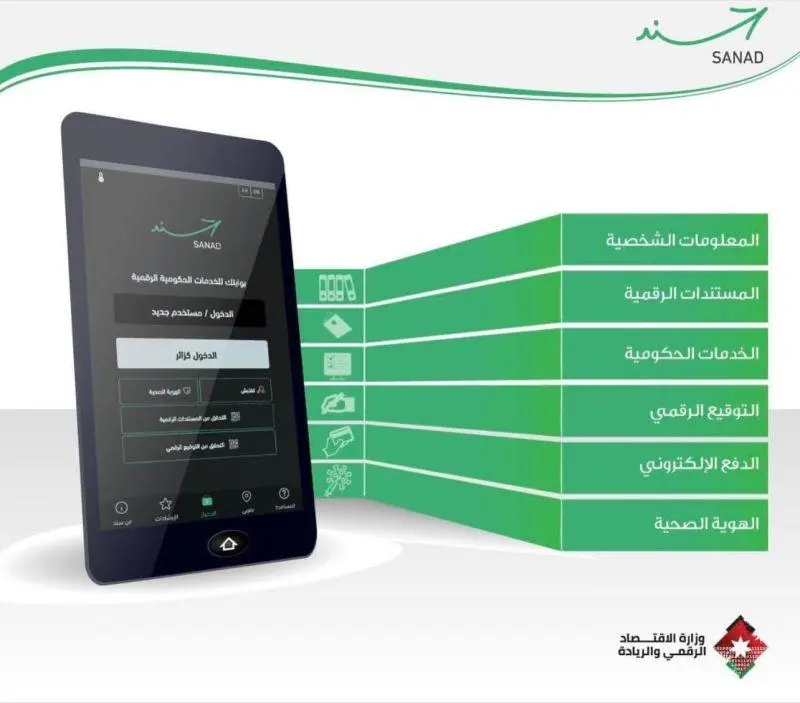

Digital Services in Numbers
Jordan is accelerating its digital transformation by making government services more accessible through online platforms and smart applications. By 2026, more than 85% of targeted government services have been digitized, helping citizens and residents complete essential transactions more easily and efficiently
85.8%
Government Services Digitized
2.8 Million
Activated Digital IDs
550+
Digital Government Services
50+
Government and Private Entities
363.84 Million
Digital Payment Transactions
93.26 Billion JOD
Digital Payment Value

Digital Identity (Sanad)
Sanad is Jordan's official digital government application, designed to provide citizens and residents with secure and convenient access to government services. It allows users to activate their digital identity, access official digital documents, complete transactions, pay bills, and digitally sign documents through one unified platform.
Secure Digital Identity
Provides a unified digital identity to securely access government services and verify personal information.
Access to Government Services
Access more than 550 digital services from over 50 government and private sector entities through one application.
Digital Documents and Signatures
Allows users to access official digital documents, store them, and digitally sign documents without relying on paper-based procedures.